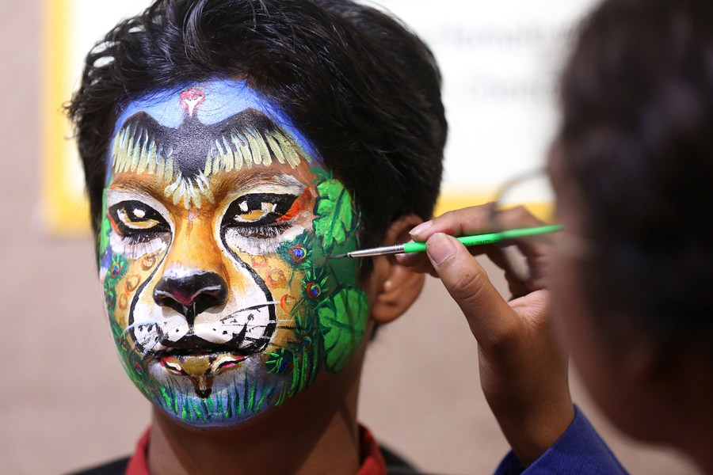

Welcome
Bringing imagination to life through vibrant face-painting designs for kids and adults alike.
Face Painting Basics
Face painting is a fun and creative form of art that allows people to transform their appearance using colorful designs.
It is popular at birthday parties, festivals, school events, and community celebrations.
- Flowers
- Characters
- Animal faces

Featured
Design Gallery
Check out some examples of my face painting work.
Video Demo